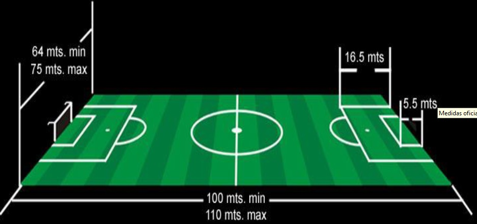
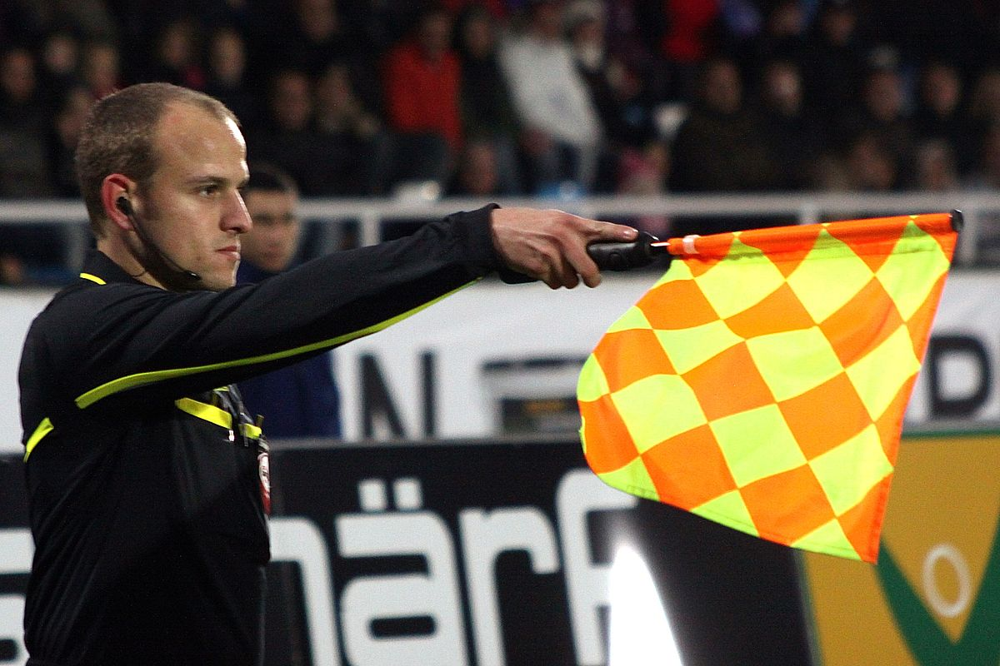
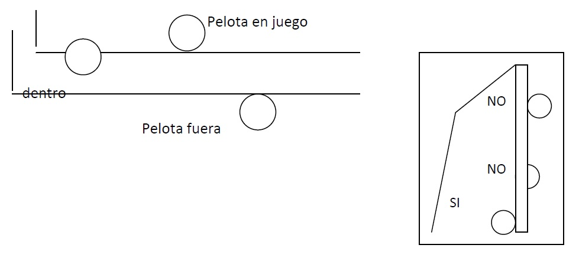
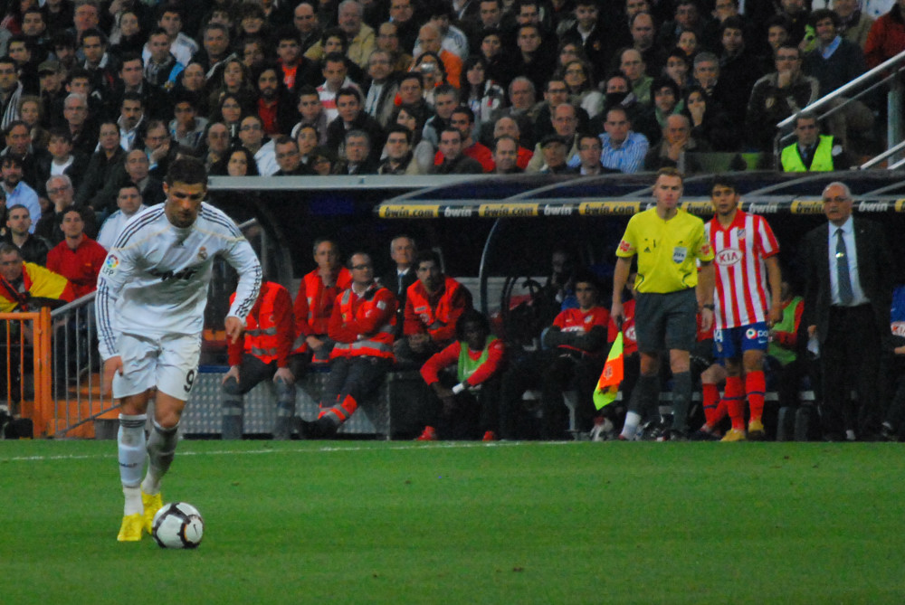
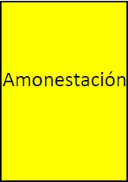
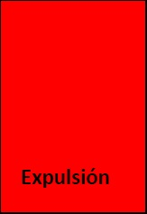

La cancha y sus medidas:

Imagen disponible en portal Uruguay EducaEs de forma rectangular, de césped natural o en algunos casos sintético con medidas que oscilan entre 90 metros de mínimo y 110 metros de máximo en el largo y entre 45 metros de mínimo y 75 metros de máximo en el ancho
Se destacan además el círculo central, el área grande (40 metros de largo x 16,5 metros de ancho donde el golero puede tocar o jugar la pelota con las manos) y el área chica para especial protección del arquero. El punto penal a 11 metros de la línea de arco.
El arco tiene 7,32 metros de largo por 2,44 metros de alto y los postes deben ser de color blanco.
Tiempo de juego:
El tiempo total es de 90 minutos, dividido a su vez en dos tiempos de 45 minutos, con 15 minutos de descanso. Cuando el partido requiere definición (donde debe surgir un ganador) dependiendo el reglamento del torneo se jugará un alargue de dos tiempos de 15 minutos y de proseguir ejecución de tiros penales.  
Los jueces:
El partido es dirigido por tres jueces, el juez principal quien lleva el control del partido secundado por dos jueces de línea (primer y segundo línea) también hay un cuarto juez quien supervisa y colabora con la terna.
¿Cuándo está fuera la pelota y cuándo es gol en Fútbol?
Se considera fuera cuando la pelota traspasa completamente la línea perimetral asimismo se considera “gol” cuando la pelota traspasa completamente la línea del arco.
{kind=link}
¿Cuántos jugadores juegan?
En cada equipo juegan once jugadores simultáneamente siendo uno de ellos el golero. Además, cada equipo cuenta en el banco de relevos o suplentes, con cinco o siete jugadores de acuerdo al reglamento de la competencia que se esté disputando.
Se pueden realizar hasta cinco cambios. En un partido donde el jugador que fue sustituido no podrá volver a ingresar por el resto del encuentro. Un equipo no puede seguir jugando con menos de siete jugadores en cancha, si esto sucede perderá el partido.
Saques:
- Saque de centro: cuando comienza el partido y el segundo tiempo así como cuando se reanuda el juego luego de un gol.
- Saque de banda: cuando la pelota se va fuera por la banda lateral reanudará el juego el equipo contrario por parte de un jugador de frente al terreno de juego y con los pies apoyados en el suelo con ambas manos lanzando la pelota por encima de la cabeza de quien realiza el saque.
- Saque de meta: cuando la pelota es impulsada fuera de la línea de meta por un jugador del equipo atacante reanudará el equipo contrario con el pie desde el vértice del área chica.
- Corner o saque de esquina: cuando la pelota se va por la línea de meta y es tocada en última instancia por un jugador defensor el equipo atacante reanudará el juego con un tiro de esquina ejecutado con el pie desde el vértice de la línea de meta y línea de banda correspondiente.
Tiro libre:
El reglamento hace referencia a nueve casos por los que el juez interpreta una falta y otorga como tiro libre directo como por ejemplo: cargar intencionalmente sobre un jugador del equipo contrario con violencia, por la espalda, sujetarlo, empujarlo intencionalmente, golpear, dar un puntapié, zancadilla o intento de ésta, saltar intencionalmente contra o sobre un jugador contrario, tocar intencionalmente la pelota con las manos (a excepción del golero dentro de su área), etc.
Este tiro libre directo se efectivizará desde el lugar en el que se cometió la falta debiendo estar los jugadores del equipo contrario a un distancia no menor a nueve metros de la pelota.

Tiro penal:
Se sanciona como “penal” cuando una de estas infracciones que ameritan tiro libre es cometida por un defensor dentro de su propia área.
El penal se remata desde el punto señalado dentro del área a una distancia de once metros de la línea de arco o meta debiendo estar el resto de los jugadores en el momento de la ejecución dentro de la cancha a una distancia no menor a nueve metros (fuera del área y medialuna de ésta). El golero debe estar sobre la línea de arco permitiéndosele mover lateralmente previo al remate, no así para adelante, de forma de “achicar” el arco (ángulo de tiro). La pelota quedará en juego al haber recorrido una distancia igual a su circunferencia donde podrá ser tocada por cualquier otro jugador.
¿Cuándo se sanciona fuera de juego?
El off –side o fuera de juego es una regla particular del fútbol que lo diferencia de otros deportes de equipo. El reglamento marca que: “Un jugador se encuentra fuera de juego si está más próximo de la línea de meta contraria que la pelota, en el momento en que ésta se juega”.
Con las siguientes excepciones:
{kind=link}
- Si en el momento de producirse el pase a éste jugador se hallara en su propio terreno de juego o mitad de cancha.
- Cuando hay por lo menos dos contrarios entre él y la línea de meta o está a la misma altura o línea que ellos o en la misma línea que el penúltimo adversario.
- Cuando recibe la pelota proveniente de un saque de meta, un saque de banda o un tiro de esquina.
- Cuando la pelota es tocada por última vez por un jugador contrario hacia su propio arco a un compañero o al propio golero.
¿Cuáles son las sanciones disciplinarias?
Dependiendo de la gravedad de la infracción cometida el juez podrá sancionar con tarjeta amarilla o roja a un jugador de cancha, suplente o cuerpo técnico.
Sanciones que ameritan tarjeta amarilla:
- Conducta antideportiva leve.
- Desaprobar con gestos o palabras.
- Reiteración de infracciones. Amonestación
- Retardar la reanudación del juego.
- No respetar la distancia en un saque de esquina o tiro libre.
- Entrar a la cancha o volver a entrar a ésta sin autorización.
- Abandonar intencionalmente la cancha sin autorización.
- Sacarse o levantarse la camiseta intencionalmente.

Sanciones que ameritan tarjeta roja o expulsión:
- Juego brusco grave.
- Conducta violenta.
- Impedir con la mano intencionalmente un gol.
- Cometer falta a un adversario de cara al gol siendo último o penúltimo hombre.
- Gestos ofensivos o palabras graves o groseras.
- Recibir segunda amonestación o tarjeta amarilla.
El jugador que es expulsado debe abandonar la cancha, no pudiendo ingresar otro jugador por el resto del encuentro.
